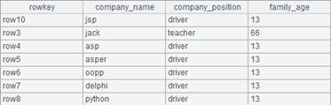
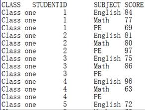

Description:
Get a table sequence based on a pseudo table.
Syntax:
T.import(xi:Ci,¡)
Note:
The function gets a table sequence based on pseudo table T by specifying field expressions xi and field names Ci, which, by default, field names in the pseudo table. It gets a table sequence using all fields of the pseudo table when parameters xi:Ci are absent.
Parameter:
|
T |
A pseudo table |
|
xi |
A field expression |
|
Ci |
Field name in the result table sequence |
Return value:
A table sequence
Example:
|
|
A |
|
|
1 |
=create(file).record(["D:/file/pseudo/empT.ctx"]) |
|
|
2 |
=pseudo(A1) |
Generate a pseudo table object |
|
3 |
=A2.import() |
Get a table sequence from A2¡¯s pseudo table using all its fields since no parameters are present  |
|
4 |
=A2.import(EID:eid,NAME,SALARY:salary) |
Retrieve fields EID, NAME and SALARY from the pseudo table to form a table sequence, and rename fields eid, NAME and salary respectively  |